from matplotlib import pyplot as plt
import numpy as np
import pandas as pdimport statsmodels.api as smdf.describe()| income | education | prestige | |
|---|---|---|---|
| count | 45.000000 | 45.000000 | 45.000000 |
| mean | 41.866667 | 52.555556 | 47.688889 |
| std | 24.435072 | 29.760831 | 31.510332 |
| min | 7.000000 | 7.000000 | 3.000000 |
| 25% | 21.000000 | 26.000000 | 16.000000 |
| 50% | 42.000000 | 45.000000 | 41.000000 |
| 75% | 64.000000 | 84.000000 | 81.000000 |
| max | 81.000000 | 100.000000 | 97.000000 |
df.cov()| income | education | prestige | |
|---|---|---|---|
| income | 597.072727 | 526.871212 | 645.071212 |
| education | 526.871212 | 885.707071 | 798.904040 |
| prestige | 645.071212 | 798.904040 | 992.901010 |
from matplotlib import pyplot as pltplt.figure(figsize=(8,6))
plt.plot(df['education'],df['income'],'o')
plt.grid()
plt.xlabel("x (Education)")
plt.ylabel("y (Income)")
plt.savefig("data_description.png")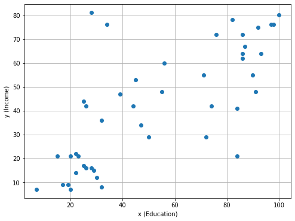
for i in [1,2,3]:
xvec = np.linspace(10,100)
plt.figure(figsize=(12,8))
plt.plot(df['education'],df['income'],'o')
plt.plot(xvec, xvec * 0 + 50)
if i>=2:
plt.plot(xvec, xvec )
if i>=3:
plt.plot(xvec, 90- 0.6*xvec )
plt.grid()
plt.xlabel("x (Education)")
plt.ylabel("y (Income)")
plt.savefig(f"which_line_{i}.png")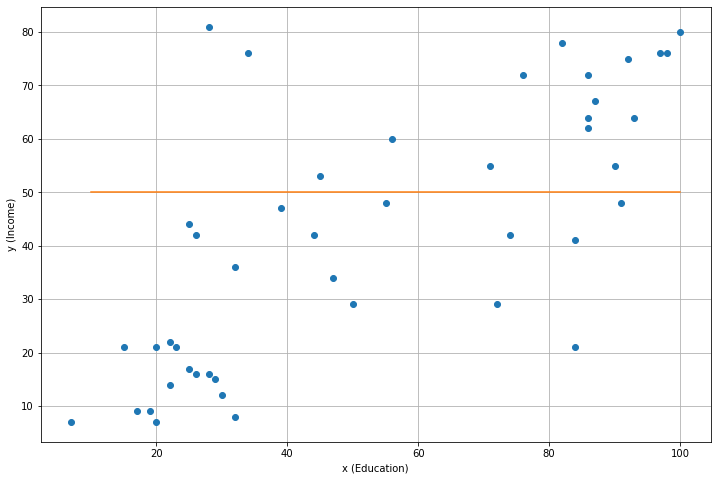
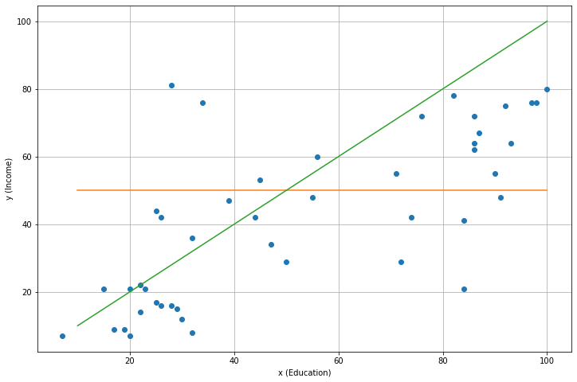
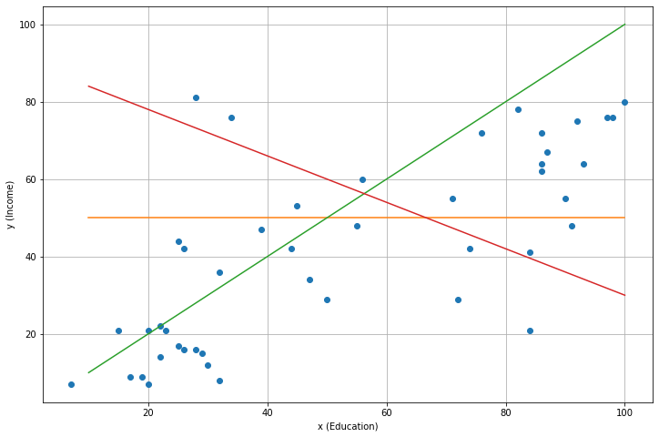
from ipywidgets import interactimport matplotlib.patches as patchesa = 0.1
b = 1.0
ind = 23
approx = a + b*xvec
# Create figure and axes
# plt.figure(figsize=(8,6))
fig,ax = plt.subplots(1,figsize=(12,8))
plt.plot(df['education'],df['income'],'o')
plt.plot(xvec, approx, color='red')
x, y = df['education'][ind], df['income'][ind]
plt.plot(x, y, 'o', color='red' )
p = a+b*x
plt.grid(True)
h = abs(p-y)
plt.vlines(x, y+h, y, color='red')
plt.xlim(0,140)
plt.ylim(0,100)
plt.savefig(f"error_0.png")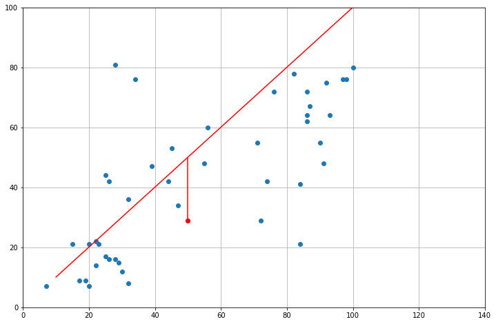
plt.vlines?Signature: plt.vlines( x, ymin, ymax, colors=None, linestyles='solid', label='', *, data=None, **kwargs, ) Docstring: Plot vertical lines. Plot vertical lines at each *x* from *ymin* to *ymax*. Parameters ---------- x : float or array-like x-indexes where to plot the lines. ymin, ymax : float or array-like Respective beginning and end of each line. If scalars are provided, all lines will have same length. colors : list of colors, default: :rc:`lines.color` linestyles : {'solid', 'dashed', 'dashdot', 'dotted'}, optional label : str, default: '' Returns ------- `~matplotlib.collections.LineCollection` Other Parameters ---------------- **kwargs : `~matplotlib.collections.LineCollection` properties. See Also -------- hlines : horizontal lines axvline: vertical line across the axes Notes ----- .. note:: In addition to the above described arguments, this function can take a *data* keyword argument. If such a *data* argument is given, the following arguments can also be string ``s``, which is interpreted as ``data[s]`` (unless this raises an exception): *x*, *ymin*, *ymax*, *colors*. Objects passed as **data** must support item access (``data[s]``) and membership test (``s in data``). File: ~/.local/opt/miniconda/lib/python3.8/site-packages/matplotlib/pyplot.py Type: function
a = 0.1
b = 1.0
ind = 23
approx = a + b*xvec
# Create figure and axes
# plt.figure(figsize=(8,6))
fig,ax = plt.subplots(1,figsize=(12,8))
plt.plot(df['education'],df['income'],'o')
plt.plot(xvec, approx, color='red')
x, y = df['education'][ind], df['income'][ind]
plt.plot(x, y, 'o', color='red' )
p = a+b*x
plt.grid(True)
h = abs(p-y)
if p-y>0:
# Create a Rectangle patch
rect = patches.Rectangle((x,y),h,h,linewidth=1, color='red', fill=True, alpha=0.05)
ax.add_patch(rect)
plt.xlim(0,140)
plt.ylim(0,100)
plt.savefig(f"errors_{1}.png")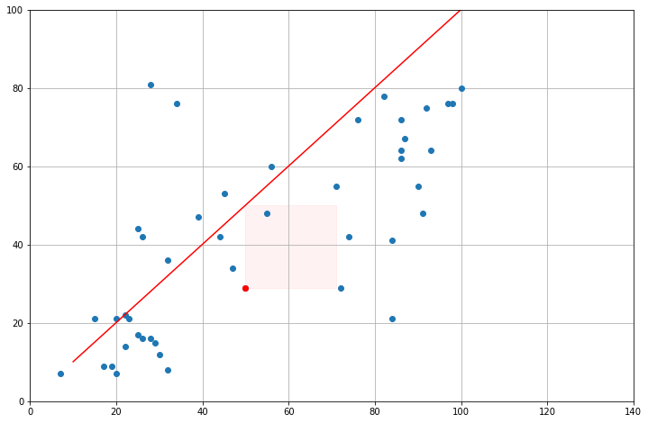
def L(a,b):
Δ = a + b*df['education'] - df['income']
return (Δ**2).sum()a = 0.1
b = 0.8
approx = a + b*xvec
# plt.figure(figsize=(8,6))
fig,ax = plt.subplots(1,figsize=(12,8))
plt.plot(df['education'],df['income'],'o', label=f"L({a,b})={L(a,b)}")
plt.plot(xvec, approx, color='red')
plt.grid(True)
for ind in range(df.shape[0]):
x, y = df['education'][ind], df['income'][ind]
p = a+b*x
h = abs(p-y)
if p-y>0:
# Create a Rectangle patch
rect = patches.Rectangle((x,y),h,h,linewidth=1, color='red', fill=True, alpha=0.05)
ax.add_patch(rect)
else:
rect = patches.Rectangle((x,y-h),h,h,linewidth=1, color='red', fill=True, alpha=0.05)
ax.add_patch(rect)
plt.xlim(0,140)
plt.ylim(0,100)
plt.legend(loc='upper right')
plt.savefig(f"errors_2.png")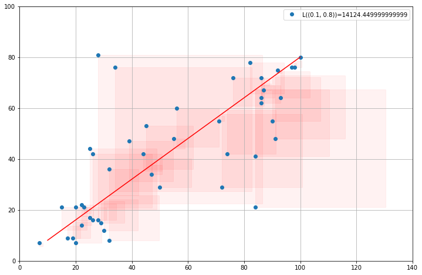
a = 90
b = -0.6
approx = a + b*xvec
# plt.figure(figsize=(8,6))
fig,ax = plt.subplots(1,figsize=(12,8))
plt.plot(df['education'],df['income'],'o', label=f"L({a,b})={L(a,b)}")
plt.plot(xvec, approx, color='red')
plt.grid(True)
for ind in range(df.shape[0]):
x, y = df['education'][ind], df['income'][ind]
p = a+b*x
h = abs(p-y)
if p-y>0:
# Create a Rectangle patch
rect = patches.Rectangle((x,y),h,h,linewidth=1, color='red', fill=True, alpha=0.05)
ax.add_patch(rect)
else:
rect = patches.Rectangle((x,y-h),h,h,linewidth=1, color='red', fill=True, alpha=0.05)
ax.add_patch(rect)
plt.xlim(0,140)
plt.ylim(0,100)
plt.legend(loc='upper right')
plt.savefig(f"errors_3.png")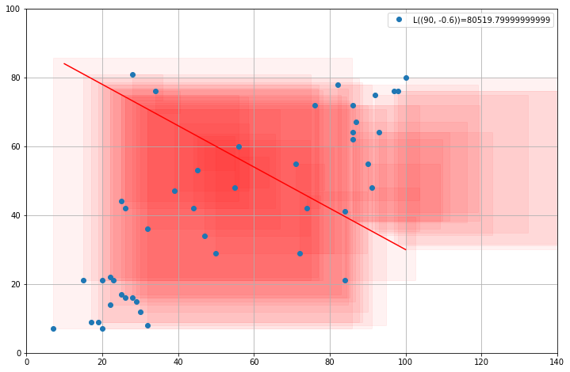
import scipy.optimizescipy.optimize.minimize(lambda x: L(x[0], x[1]),np.array([0.5, 0.5])) fun: 12480.970174488397
hess_inv: array([[ 7.14169839e-09, -3.91281920e-09],
[-3.91281920e-09, 2.46663613e-09]])
jac: array([0.00024414, 0.00012207])
message: 'Desired error not necessarily achieved due to precision loss.'
nfev: 57
nit: 7
njev: 19
status: 2
success: False
x: array([10.60350224, 0.59485938])a = 10
b = 0.59
approx = a + b*xvec
# plt.figure(figsize=(8,6))
fig,ax = plt.subplots(1,figsize=(12,8))
plt.plot(df['education'],df['income'],'o', label=f"L({a,b})={L(a,b)}")
plt.plot(xvec, approx, color='red')
plt.grid(True)
for ind in range(df.shape[0]):
x, y = df['education'][ind], df['income'][ind]
p = a+b*x
h = abs(p-y)
if p-y>0:
# Create a Rectangle patch
rect = patches.Rectangle((x,y),h,h,linewidth=1, color='red', fill=True, alpha=0.05)
ax.add_patch(rect)
else:
rect = patches.Rectangle((x,y-h),h,h,linewidth=1, color='red', fill=True, alpha=0.05)
ax.add_patch(rect)
plt.xlim(0,140)
plt.ylim(0,100)
plt.legend(loc='upper right')
plt.savefig(f"errors_4.png")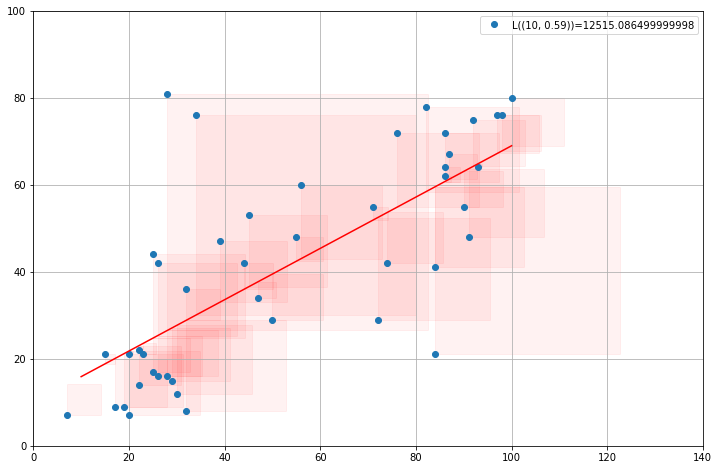
a = 10
b = 0.59
approx = a + b*xvec
# plt.figure(figsize=(8,6))
fig,ax = plt.subplots(1,figsize=(12,8))
plt.plot(df['education'],df['income'],'o', label=f"L({a,b})={L(a,b)}")
plt.plot(xvec, approx, color='red', alpha=0.5)
plt.plot(60, a + b*60, 'o', color='red',)
print(a+b*60)
plt.xlim(0,140)
plt.ylim(0,100)
plt.legend(loc='upper right')
plt.savefig(f"prediction.png")45.4
a = 10
b = 0.59
approx = (a + b*df['education'] - df['income'])
plt.figure(figsize=(12,6))
plt.subplot(121)
plt.plot(approx)
plt.grid(False)
plt.title("Residuals")
plt.subplot(122)
distplot(approx)
plt.title("Distribution of residuals")
plt.grid()
plt.savefig("residuals.png")/home/pablo/.local/opt/miniconda/lib/python3.8/site-packages/seaborn/distributions.py:2557: FutureWarning: `distplot` is a deprecated function and will be removed in a future version. Please adapt your code to use either `displot` (a figure-level function with similar flexibility) or `histplot` (an axes-level function for histograms).
warnings.warn(msg, FutureWarning)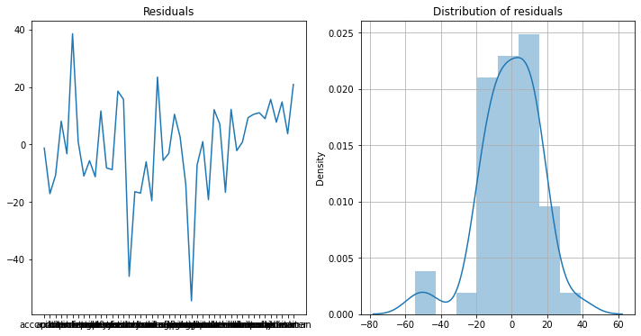
(a + b*df['education'] - df['income']).std()16.842782676352154/home/pablo/.local/opt/miniconda/lib/python3.8/site-packages/seaborn/distributions.py:2557: FutureWarning: `distplot` is a deprecated function and will be removed in a future version. Please adapt your code to use either `displot` (a figure-level function with similar flexibility) or `histplot` (an axes-level function for histograms).
warnings.warn(msg, FutureWarning)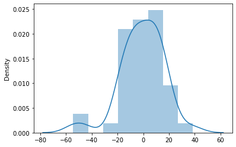
from scipy.stats import ff(0.3)TypeError: _parse_args() missing 1 required positional argument: 'dfd'np.randK = 100
xvec = np.linspace(0,1,K)
e1 = np.random.randn(K)*0.1
yvec = 0.1 + xvec*0.4 + e1
e2 = np.random.randn(K)*0.05
yvec2 = 0.1 + xvec*(xvec-1)/2 + e2
e3 = np.random.randn(K)*xvec/2
yvec3 = 0.1 + xvec + e3
yvec4 = 0.1 + np.sin(xvec*6) + np.random.randn(K)*xvec/2from dolo.numeric.processes import VAR1sim = VAR1( ρ=0.8, Σ=0.001).simulate(N=1,T=100)
yvec4 = 0.1 + xvec*0.4 + sim.ravel()plt.figure(figsize=(18,6))
plt.subplot(241)
plt.plot(xvec, yvec,'o')
plt.plot(xvec, 0.1 + xvec*0.4 )
plt.ylabel("Series")
plt.title("white noise")
plt.subplot(242)
plt.plot(xvec, yvec2, 'o')
plt.plot(xvec, yvec2*0)
plt.title('nonlinear')
plt.subplot(243)
plt.plot(xvec, yvec3,'o')
plt.plot(xvec, 0.1 + xvec)
plt.title('heteroskedastic')
plt.subplot(244)
plt.plot(xvec, yvec4,'o')
plt.plot(xvec, xvec*0.6)
plt.title('correlated')
plt.subplot(245)
plt.plot(xvec, e1,'o')
plt.ylabel("Residuals")
plt.subplot(246)
plt.plot(xvec, yvec2-0.075, 'o')
plt.subplot(247)
plt.plot(xvec, e3,'o')
plt.subplot(248)
plt.plot(xvec, sim.ravel(),'o')
plt.tight_layout()
plt.savefig("residuals_circus.png")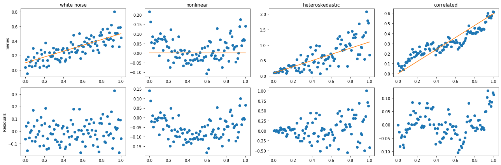